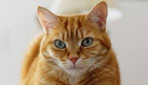
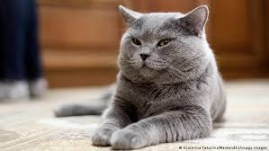

Gato malhumorado

Muchos gatos cuentan con un humor poco agradable, por lo regular estos no son suceptibles a caricias en lugares que no sean en su cabeza o cuello, hacerlo fuera de estos lugares causara que se moleste y se defienda. Es importante saber diferenciar entre el estado de humor del gato y su personalidad, ya que el comportamiento puede der parecido en un gato que se encuentra enfermo. Puedes diferencialo si notas que el gato no actua asi normalmente, y que es algo que lleva de tiempo corto.
Gatos naranja
A los gatos naranjas también se les llama gatos "orange Tabby" y su pelaje rayado puede variar en tonos desde rojo anaranjado a amarillo dorado. Además, el patrón atigrado de estos felinos es uno de los más antiguos y tienen muchos rasgos en común con los gatos monteses. Se cree que los gatos naranjas pueden proceder de estos animales salvajes.
Gato normal
Los gatos puede ser muy dinámicos, un gato normal puede que sea extrovertido, ansioso, frívolo o espontáneo, siempre aconsejamos llevar a cabo los cuidados de desparasitación para evitar el riesgo de contagio de parásitos más comunes en nuestro entorno, lo que mantendra su homor muy parejo o equilibrado mejor dicho. Este gato es un equilibrio entre el gato malhumorado y uno naranja, el cual puede llegar a ser muy activo y bastante bipolar. Aconsejamos tener mas de un gato.